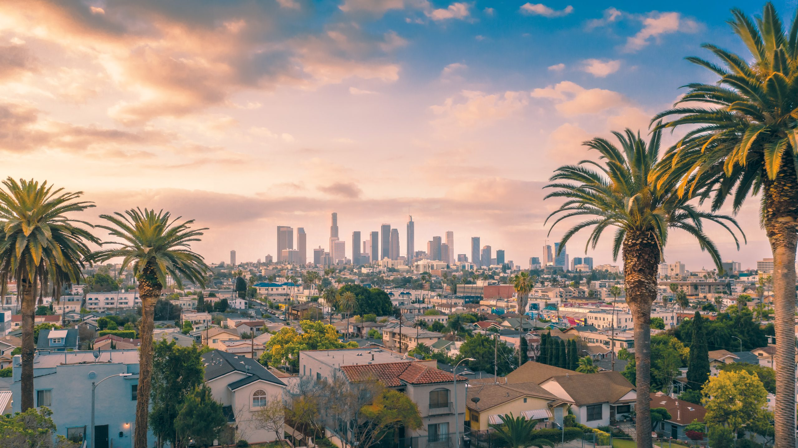

Let's go travel!
Grand Canyon

Geographical Location: Arizona, USA
The Grand Canyon is a world-renowned natural wonder located in the U.S. state of Arizona. Carved over millions of years by the Colorado River, the canyon stretches over 277 miles and plunges more than a mile deep. Known for its breathtaking vistas and geological significance, the Grand Canyon is a symbol of the immense power of natural forces and a must-see destination for nature enthusiasts and tourists alike.
Antelope Canyon

Geographical Location: Arizona, USA
Antelope Canyon is a stunning natural wonder located in northern Arizona, USA. Formed by the erosion of sandstone due to flash flooding and wind, the canyon is famous for its wave-like structure and the ethereal light beams that shine down into the openings, creating a surreal and mesmerizing atmosphere. Divided into two main sections, Upper and Lower Antelope Canyon, this geological marvel is a popular destination for photographers and nature enthusiasts alike.
Hourseshoe Bend

Geographical Location: Arizona, USA
Horseshoe Bend is a stunning natural landmark located near the town of Page in Arizona, USA. This horseshoe-shaped meander of the Colorado River is famed for its breathtaking views and dramatic 1,000-foot drop. A popular destination for photographers and outdoor enthusiasts, Horseshoe Bend offers a unique vantage point to experience the beauty and scale of the American Southwest.
Glen Canyon

Geographical Location: Arizona, USA
Located in southeastern Utah and northern Arizona, Glen Canyon is a testament to nature's artistry, sculpted over millennia by the Colorado River. The construction of the Glen Canyon Dam in the 1960s birthed Lake Powell, a mesmerizing blend of deep blue waters against towering sandstone walls. Beyond the lake, the canyon boasts hidden alcoves, natural arches, and ancient petroglyphs, making it a captivating gem of the American Southwest.
Los Angeles
Geographical Location: California, USA
Los Angeles, often abbreviated as L.A., is the second-largest city in the United States, located in Southern California. Known for its Mediterranean climate, ethnic diversity, and bustling entertainment industry, the city is a global hub for culture, technology, and international trade. Home to Hollywood, L.A. plays a significant role in shaping global pop culture. With its palm-fringed boulevards, iconic landmarks like the Hollywood Sign and Griffith Observatory, and numerous beaches, Los Angeles offers a unique blend of natural beauty and urban sophistication.
Santa Monica

Geographical Location: California, USA
Santa Monica is a vibrant coastal city in Los Angeles County, California, known for its iconic Santa Monica Pier, stunning beaches, and bustling shopping areas. A popular tourist destination, the city offers a blend of natural beauty and urban sophistication, making it a unique spot for relaxation and entertainment. With a rich history and a focus on sustainability, Santa Monica serves as a cultural hub that attracts millions each year.
Photo Gallery